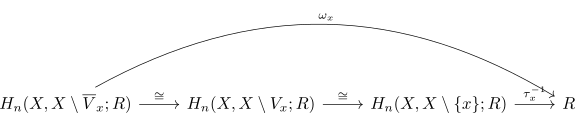

bijection between orientations and natural isomorphisms
Proposition
Let \(M\) be an \(n\)-dimensional connected manifold, $R$ a ring. Then there exists a Bijection between
- natural isomorphisms $\nu_{X} \cong \overline{R}$ for the fundamental groupoid to homology functor and the constant functor
- R-Orientations
Proof
1) $\implies$ 2)
Suppose $\tau: \overline{R} \rightarrow \nu_{X}$ is a natural isomorphism. Then for each $x \in X$ pick a chart $\varphi: U_x \cong \mathbb{R}^n$ and consider the open cover
with $\overline{V}_x \subseteq U_x$
For each $x \in X$ there exist isomorphisms

Let
and $s_x$ the image of $\overline{s}_x$ in $H_n(X, X \setminus V_x;R)$
Then $(s_x)_x$ is a compatible family of \(R\)-orientations: Let $x,y \in X$ and $z \in \overline{V}_x \cap \overline{V}_y$ be arbitrary.
Then choose paths $\lambda: x \leadsto z, \mu: y \leadsto z$ (cf. connected manifold as path connected manifold)
Then consider the diagram
\begin{displaymath}
\begin{tikzcd}
H_n(X, X \setminus \overline{V}_x;R) \arrow[]{rr}{\cong} \arrow[]{rd}{}& & H_n(X, X \setminus \{x\};R) \arrow[]{r}{\tau_x} \arro[]{d}{\alpha_{\lambda}}& R \arrow[]{d}{=}\\
& H_n(X, X \setminus \overline{V}_x \cap \overline{V}_y;R) \arrow[]{r}{\cdot r} & H_n(X, X \setminus \{z\};R) \arrow[]{r}{\tau_z} & R \\
H_n(X, X \setminus \overline{V}_y;R) \arrow[]{rr}{\cong} \arrow[]{ru}{}& & H_n(X, X \setminus \{y\};R) \arrow[]{r}{\tau_y} \arrow[]{u}{\alpha_{\mu}}& R \arrow[]{u}{=}\\
\end{tikzcd}
\end{displaymath}Then the right part commutes as $\tau$ is a natural transformation. The left part commutes by <> (welldefinedness of the fundamental groupoid to homology functor)
This implies that $\overline{s}_x, \overline{s}_y$ map to the same element in $H_n(X, X \setminus \{z\};R)$ Since $\overline{V}_x \cap \overline{V}_y$ is contained in a single chart $U$, the map
TODO
2) $\implies$ 1)
Let $\sigma_{X} = (\sigma_{X,K})_K$ be an R-orientation of $X$. Then define
(cf. universal property of a ring as module)
Since $\sigma_{X,x}$ is by assumption a generator, this is an module-isomorphism (cf. generator of a ring as module as units)
Therefore it remains to show naturality
Let $\lambda: [0,1] \rightarrow X$ be a path from $x$ to $y$ and $0 = t_0 < ... < t_r = 1$ a subdivision with respect to charts $U_i$ Then it remains to show that
Then choose an open set $B \subseteq U_{i}$ such that
- $\overline{B} \subseteq U_i$
- $\lambda(t_i), \lambda(t_{i+1}) \in \overline{B}$
Then $\overline{B}$ is compact and hence
restricts by assumption both to $\sigma_{X,\lambda(t_i)}, \sigma_{X, \lambda(t_{i+1})}$